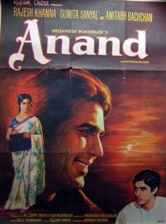
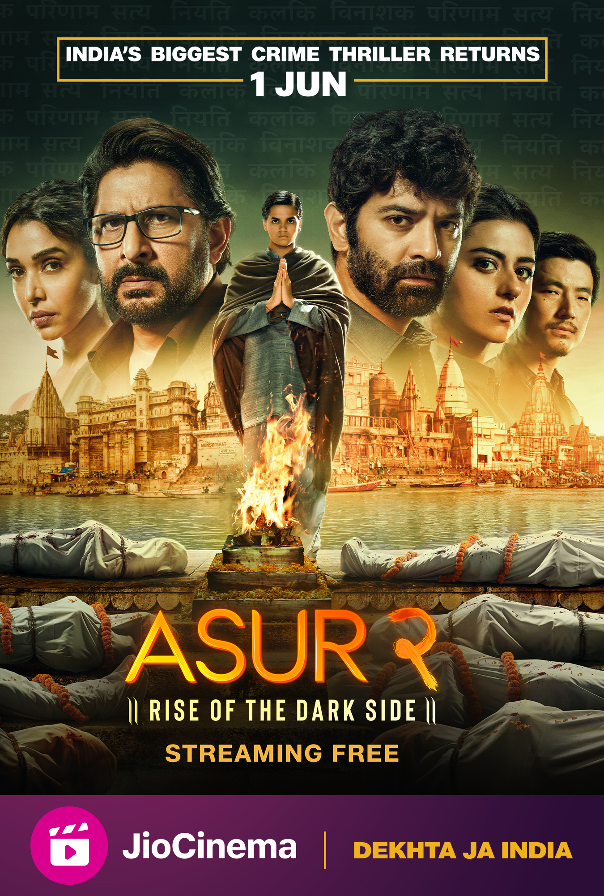

All time favourite of mine

Matron is horrified to hear that Anand is suffering from terminal cancer. His cheerful and vibrant nature soothes Bhaskar, who has a contrasting nature and they become good friends. Anand has rare quality to attract people and befriend them. In one of such encounter he meets Isa Bhai (Johnny Walker), a theater actor.

Set in the backdrop of the mystical city of Varanasi, Asur follows Nikhil Nair, a forensic-expert-turned-teacher, who returns to his roots at the Central Bureau of Investigation, and along with his former mentor Dhananjay Rajpoot, finds himself caught in a cat and mouse game with a brutal serial killer.

John Wick is a 2014 American action thriller film directed by Chad Stahelski and written by Derek Kolstad. The film follows John Wick (Keanu Reeves), a legendary hitman who is forced out of retirement to seek revenge against the men who killed his puppy, a final gift from his recently deceased wife.